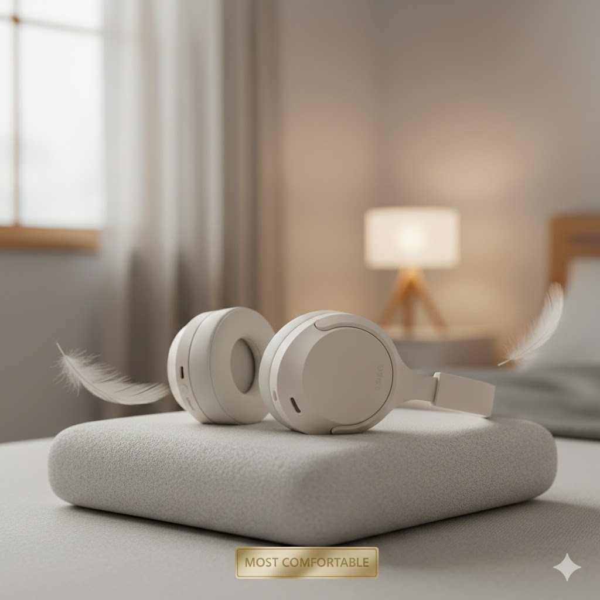
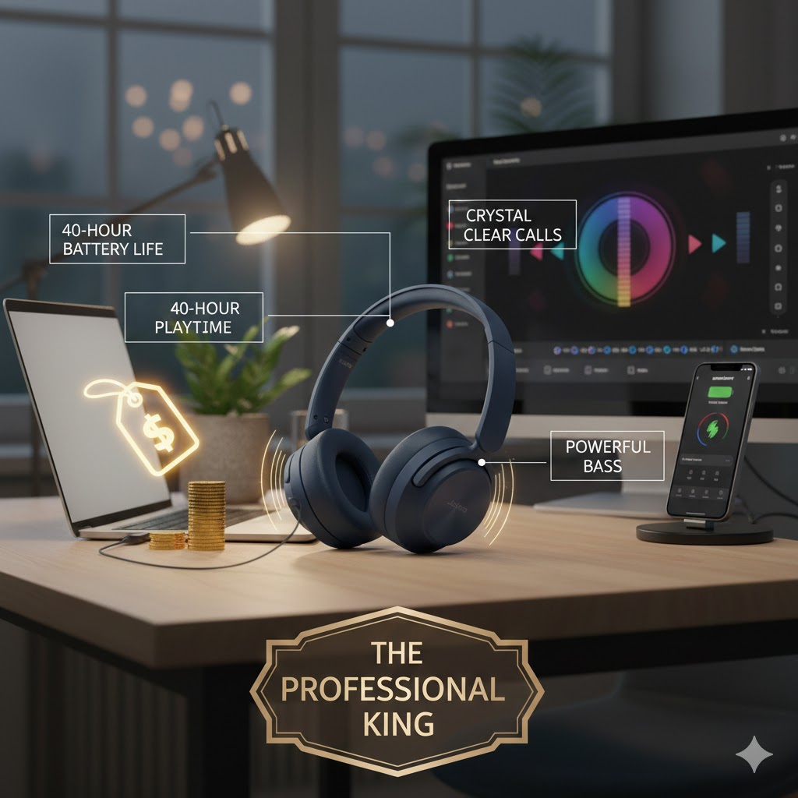

"Working from home comes with its own set of distractions—whether it's the sound of kids playing, kitchen chatter, or disruptive street traffic. These noises can easily break your concentration and lower your productivity. If you are looking for premium Active Noise Cancellation (ANC) on a budget of under $100, this list is for you. We have rigorously tested these headphones based on their battery endurance, long-wear comfort, and their ability to effectively block out environmental noise to keep you in the zone."
1. The Value King: Anker Soundcore Life Q30

"The Anker Soundcore series has earned global acclaim for delivering premium features at a fraction of the cost. The Life Q30 features advanced Hybrid Active Noise Cancelling (ANC) technology, capable of filtering out up to 95% of low-frequency ambient sounds—like airplane engines or traffic hum. With customizable EQ settings via the Soundcore app and a massive 40-hour battery life, it is the ultimate productivity tool for remote workers."
Pros: Ultralight design for all-day comfort, excellent dual-noise sensor technology, 35-hour battery life.
Cons:Plastic build feels less "premium," does not fold into a compact size.
2. Most Comfortable: Sony WH-CH720N

"While Sony’s flagship headphones are a significant investment, the WH-CH720N offers that same premium DNA at a much more accessible price point. Designed for the marathon worker, these are incredibly lightweight and ergonomic, making them comfortable enough for 8–10 hours of continuous use. With the same V1 Processor found in Sony's high-end models, you get impressive noise cancellation without the heavy weight or the heavy price tag."
Pros: Super light, Great sound quality, Dual connection (2 devices).
Cons: Plastic body thori sasti feel hoti hai.
3. The Value King: Soundcore Life Q20+

The Soundcore Life Q20+ is the upgraded version of the legendary Q20, now featuring USB-C charging and app support. It is the best entry-level choice for those who want effective Active Noise Cancellation without spending a fortune. With its signature 'BassUp' technology, it delivers a rich audio experience that rivals much more expensive competitors, making it a favorite for music lovers on a budget."
Pros: Incredible value for money, 40-hour playtime, very comfortable memory foam earcups.
Cons: Noise cancellation is not as strong as the Q30; micro-USB on older stock (ensure you get the '+' version).
4. The Professional Choice: Jabra Elite 45h

ANC (Active Noise Cancellation):
"If your day is filled with back-to-back virtual meetings, the Jabra Elite 45h is designed specifically for you. Unlike bulky over-ear models, these are compact on-ear headphones that offer an astounding 50 hours of battery life on a single charge. The dual-microphone technology ensures crystal-clear call quality, filtering out background noise so your voice always sounds professional."
Pros: Unbeatable battery life (50 hours), exceptional microphone clarity, fast charging (15 mins = 10 hours).
Cons: On-ear design might press on ears after many hours; no active noise cancellation (only passive).
(Conclusion) "Selecting the right pair of headphones for your remote work setup depends entirely on your daily environment and personal comfort. Whether you are trying to drown out the noise of a busy household or looking for something light enough to wear during back-to-back meetings, there is a perfect budget-friendly option for everyone.